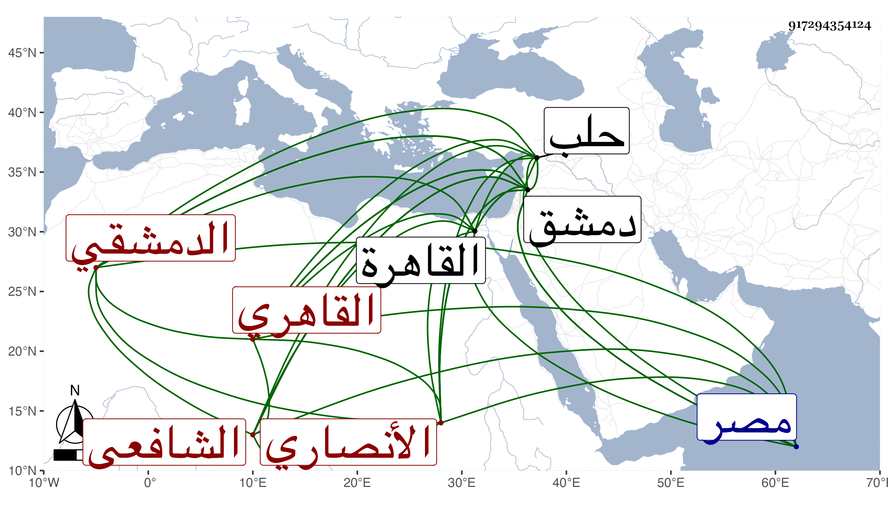

0902Sakhawi.DawLamic.ITO20230111-ara1.EIS1600.917294354124
Biography ID: 917294354124
108
محمد بن محمد بن أحمد بن محمد بن عبد الخالق بن عثمان البدر بن البدر الأنصاري الدمشقي ثم القاهري الشافعي والد الجلال محمد والزين أبي بكر وغيرهما ويعرف كسلفه بابن مزهر . ولد سنة ست وثمانين وسبعمائة بدمشق ونشأ في كنف أبيه ثم مات وهو صغير فكلفه زوج أخته المحيوي أحمد المدني وتولى التوقيع عنده ثم استقر كابيه في كتابة سر دمشق واتصل بنائبها شيخ سنين وقدم معه بعد قتل الناصر فلما تسلطن قربه واستقر به في نظر الاسطبل السلطاني ثم ولي نيابة كتابة سرها ودام مدة قائما بأعباء الديون سيما في أيام العلم داود بن الكويز لبعده عن الإنشاء والفضيلة وكون صاحب الترجمة فصيحا مفوها إلى أن استقل بالوظيفة في جمادى الآخرة سنة ثمان وعشرين عوضا عن النجم عمر بن حجي فباشرها بحرمة وافرة فعظم في الدولة جدا ونالته السعادة وأثرى جدا لمزيد رغبته في الجمع ، واستمر حتى مات بعد ضعفه قريب شهرين فأكثر بعد عصر يوم السبت سادس عشري جمادى الآخرة سنة اثنتين وثلاثين ونزل السلطان من الغد فصلي عليه ثم دفن بتربته التي أنشأها بالصحراء بالقرب من الشيخ عبد الله المنوفي عن نحو الخمسين وشهد غسله سعد العجلوني وقال ما أكرمك من قادم على الله رحمه الله وإيانا وعفا عنه . وكان مديما للتلاوة والاوراد محبا في إغاثة الملهوف ونصر المظلوم وتقريب العلماء واعتقاد الصالحين حتى أنه لشدة اختصاصه بالشيخ أحمد الزاهد أدرجه الشيخ في أوصيائه كما سبق في ترجمته ولما زوج ابنته لابن سلام اختار لشهود العقد الشمسين البوصيري وناهيك به علما وصلاحا والزراتيتي شيخ القراء كثير البر للتقي بن الفتح بن الشهيد بحيث كان العز القدسي يتعجب من كثرة بره له مع ما كان بين أبويهما واغفال الزين عبد الباسط لذلك مع الاختصاص به إلى غير هذا . قال شيخنا في إنبائه : وكانت مدة ولايته نيابة واستقلالا نحو تسع سنين لانه باشر ذلك عقب وفاة ناصر الدين بن البارزي في ثامن شوال سنة ثلاث وعشرين وباشر في غضونها نظر الجيش نيابة عن الزين عبد الباسط لما حج في سنة ست وعشرين ، وأطال في ترجمته بالثناء الحسن وغيره . ونحوه قول العيني الذي أوردته في مكان آخر ممالا احتياج بنا إليه ، وذكره ابن خطيب الناصرية في ذيله وقال أنه اختص بالمؤيد حين كان نائب حلب وعمل موقعا عنده فلما جرى بينه وبين ابن أيدمر نائب الغيبة الفتنة كان سفيره في الصلح فأمسكه وحبسه عنده بدمشق فلما مات الناصر وتوجه المؤيد إلى القاهرة أطلقه واستصحبه معه إلى الديار المصرية فولاه نظر الاسطبلات وقال أنه باشر كتابة السر بحرمة وافرة وأنه كان شكلا حسنا ذا مروءة وعصبية ، وقال المقريزي في عقوده أنه كان من الشره في جمع المال على حالة قبيحة لا يبالي بما أخذ ولا من أين أخذ مع الشح والبعد عن جميع العلوم العقلية والنقلية رضى من دينه وأمانته بجمع المال حتى كان كما قيل :
| جنى وصلها غيري وحملت عارها | خفف الله عنه وغفر له فلقد كان معتنيا |
بأمري وله على أياد . انتهى رحمه الله وإيانا .
